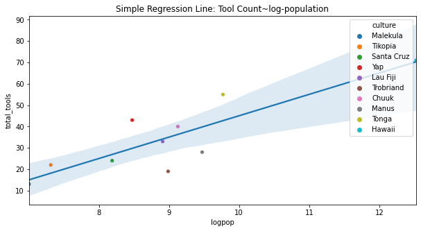
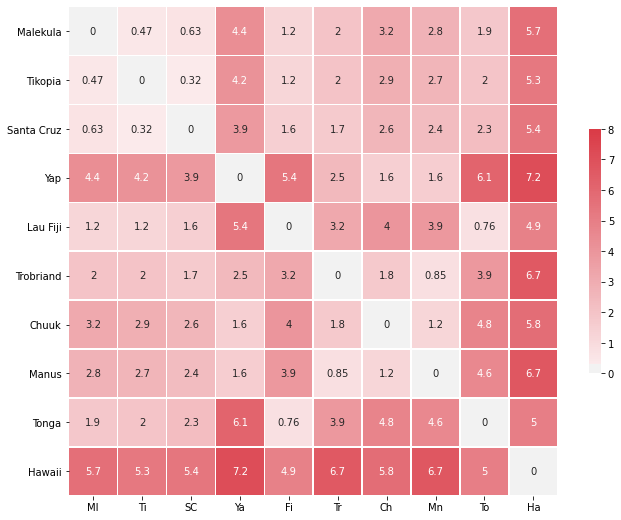
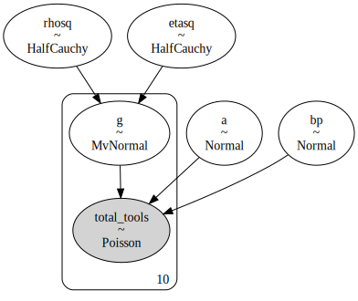
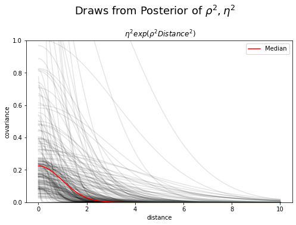
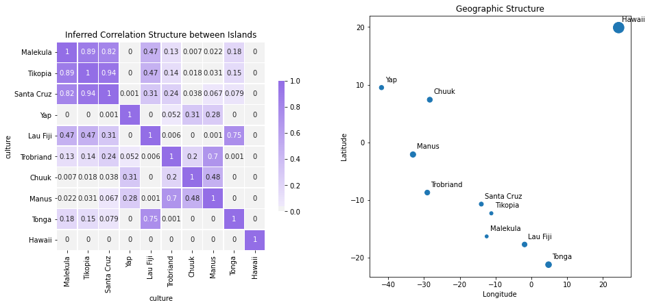
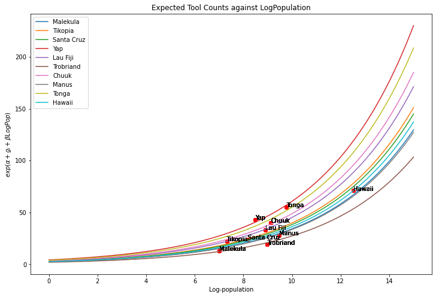

Of the varied ways in which you add to the world, you might imagine a modest influence over your social network. Of all those connections their cumulative impact is likely less than you imagine. Maybe you’re a new parent hopeful to leave a positive impression on your children, but conscious of friends ignored. Attention is a resource, so the periphery of our network may suffer neglect or fall out altogether - some individuals are sacrificed, others deliberately culled. Your influence may wax and wane, but you aspire to a level of appropriate influence on family and friends. Your aspirations change over time and this has to corressponding effect of shrinking or shifting your sphere of influence. But this phenomena is not unique to new parents, we all struggle to allot time and attention and the residual impact of our past influence always degrades.
These dynamics are so familiar that they’ve become cliche tradition. But despite the tired anecdotes of age and degradation, there is an interesting question as to how you might truly measure the evolution of influence over time. This question can be extended more to broadly to how measure correlations of any measure across a cluster of related individuals. We’ll take up a nicely concrete example of the general phenomena modelling spatial correlation and the transmission of technology across an archipelago. This model has some general characteristics which translate well to discussion of changing social dynamics under the pressures of aspiration. And the process will highlight some of features we need to account for when predicting the transmission of information or influence in the production of tools.
Tool usage and Population Size
The example (taken from McElreath’s superb Statistical Rethinking) looks at the discovery of historic tools across a number of islands in the pacific and tries to draw out the impact of population on the proliferation of those tools. At first glance there seems to be a straightforward relationship between the number of tools discovered and the relative size of the populations. But we’re also interested in how the discovery rates between cultures can be measured.

Before coming to these details we first want to crudely validate the hypothesis that population size and contact with others does influence tool creation. We can see here how there seems to be a direct linear relationship between the tool counts and the log of the population suggesting innovation is achieved at a point of critical mass. Similarly there is a clear distinction between the tool counts achieved based on contact rates.
<img src="tool_count_contact.png" alt="drawing" height="300"/>With this in mind, we could choose to model this relationship as a simple poisson regression, but even if this solved a prediction problem it doesn’t help us answer the inference question. Plotting the residuals from the model estimated with statsmodels we find a better fit to the data when we include the contact rate information. But this is a kind of crude observation. Yes, contact rates matter but what can we say about the strength of these relationships.
Spatial Correlation and Covariance
So we have a reasonable theory that greater population and increased interaction between neighbouring populations is likely to increase tool creation. We want to know how the individual islands directly influenced the tool prediction on their neighbouring islands. To measure this influence we’ll look at geographic distance to determine if and how the proximity of islands shapes the relative proliferation of tools in the historic record. This is the crucial set of measurements. It is our proxy for a series of less quantifiable cross-cultural influences. We know Tonga has the largest population but we don’t know how their influence extends across the network. We don’t know, for example, if technological innovation stems from the population centres such as Tonga or was just most pronounced there in the historic record?

As before we want to predict tool use, but now we wish to allow that the tool use on the neighbouring islands is informed by their relative distance from one another. Put another way we might say that the prior covariance structure is a function of observed distance. This suggests a model like the following:
with pm.Model() as poisson_GP_model:
## Priors for the covariance matrix
etasq = pm.HalfCauchy('etasq', 1)
rhosq = pm.HalfCauchy('rhosq', 1)
## Gaussian Process to extract a varying intercept model for each society
## We fit a covariance matrix against the squared distance between islands
## for (a) mathematical convenience and (b) the quickly decreasing influence
## represented by the parabola like shape of the square distance.
Kij = etasq*(tt.exp(-rhosq*Dmatsq)+np.diag([.01]*Nsociety))
## The prior covariance matrix is used to model a multivariate normal distribution
## distribution resulting in a baseline estimate for each society
g = pm.MvNormal('g', mu=np.zeros(Nsociety), cov=Kij, shape=Nsociety)
## The global priors for prediction model
a = pm.Normal('a', 0, 10)
bp = pm.Normal('bp', 0, 1)
## prediction model with a varying intercept derived from MvNormal
eq= pm.math.exp(a + g[df['society_idx'].values] + bp*df['logpop'])
## The Poisson likelihood
obs = pm.Poisson('totalTools', eq, observed=df['total_tools'])
idata = pm.sample(1000, tune=1000, return_inferencedata=True)Which sees is a hierarchical model of this format which embeds uncertainty in the estimation of the covariance matrix by using the hierarchical priors etasq and rhosq.

The prediction of tools count is based on a poisson distribution with a mean expressed as a kind of fixed-effects model with varying intercepts for each island.
\[ totalTools \sim \mathbf{Poisson}(exp((a + g_{i}) + bp*Logpop)) \]
where \(g_{i}\) is an island specific estimate of tool production informed by the distance between neighbouring islands. This is the underlying gaussian process assumed to contribute to the tool-creation capacity of each island. in So when we fit this model it returns estimated posterior probability distributions for all the parameters in the model, including the hierarchical parameters for the covariance matrix K. We can therefore “reconstruct” the covariance matrix that is suggested by conditioning on the observed tool counts.
_, ax = plt.subplots(1, 1, figsize=(8, 5))
xrange = np.linspace(0, 10, 200)
post_etasq = idata.posterior['etasq'].to_dataframe()
post_rhosq = idata.posterior['rhosq'].to_dataframe()
## compute posterior median covariance among societies
## we compute the median rather than the mean because of the skew in the distribution
## makes the median a better measure of central tendency.
Kij_post = np.median(post_etasq) * (np.exp(-np.median(post_rhosq) * Dmatsq) + np.diag([.01] * Nsociety))
sigma_post = np.sqrt(np.diag(Kij_post))
Rho = np.diag(sigma_post**-1).dot(Kij_post.dot(np.diag(sigma_post**-1)))
Rho = pd.DataFrame(Rho, df['culture'], columns=df['culture'])
## Plot Point Estimates
ax.plot(xrange, np.median(post_etasq) * np.exp(-np.median(post_rhosq) * xrange**2), 'k', legend='Median')
## Plot Draws from Posterior
ax.plot(xrange, (post_etasq.sample(len(xrange)).values * np.exp(-post_rhosq.sample(len(xrange)).values * xrange**2)).T,
'k', alpha=.1)
ax.set_ylim(0, 1)
ax.set_xlabel('distance')
ax.set_ylabel('covariance')
ax.set_title(r' $\eta^2 exp(\rho^2Distance^2)$')
plt.suptitle("Draws from Posterior Distribution", y=1.05, fontsize=10)Which allows us to recover the steeply degrading slope of influence.

and establish the probable correlation structure between the islands.

These estimates are plausible as they track well with the geographic details. In particular we can see how the distance of Hawaii proves a fairly insurmountable barrier preventing strong correlation. Conversely, we see a strong relationship between the small cluster of islands: Malekula,Tikopia and Santa Cruz. We can further extract the expected growth models for each island.
a = idata.posterior['a'].to_dataframe()
g = idata.posterior['g'].to_dataframe()
g = g.reset_index().pivot(['chain', 'draw'], 'g_dim_0', 'g')
b = idata.posterior['bp'].to_dataframe()
xrange = np.linspace(0, 15, 100)
expected = pd.DataFrame(g.mean(), columns=['island_intercept']).reset_index(drop=True)
expected['global_intercept'] = a.mean()[0]
expected['global_beta'] = b.mean()[0]
expected['island'] = df['culture']
for i in range(len(expected)):
y = (expected.iloc[i]['global_intercept'] + expected.iloc[i]['island_intercept']) + expected.iloc[i]['global_beta']*xrange
plt.plot(xrange, np.exp(y), label=expected.iloc[i]['island'])
plt.title("Expected Tool Counts against LogPopulation")
plt.xlabel("Log-population")
plt.ylabel(r'$exp(\alpha + g_{i} + \beta LogPop)$')
plt.legend()
Which suggests that even though Hawaii has the largest population it suffers from lesser exposures to foreign influence and slower rate of tool innovation than Yap which is positively influenced by the existence of its neigbours.
Projects, Aspiration and inferred Influence
Your role in a network can change gradually or dramatically. In either case it may be hard to know how you will feel about those changes. There is a school of thought that argues certain varieties of event are so transformative (e.g. parenthood, near-death events) that they are impossible to predict how you feel after the event occurs. The notion rests on the idea that individual decisions are weighed against the probability of the outcome and the attendant rewards for each decision, but in the scenario of transformative events we can’t even begin to estimate our subjective utility in the future. An expectant parent will not be able to predict how they will feel as a new parent. Averages from other parents will not capture how you will feel or how your priorities and goals will change. The example above shows how we can infer the latent structure of a social network from observable facts about the output of the group. The hypothesis of a transformative event could be profitably investigated by tracking the evolution of these inferred social network over a number of distinct epochs. Whether these events generate gradual or dramatic change would be quickly reflected in the influence and interaction with their peers. Deliberate cultivation of particular peer groups for a work project or personal goal will be captured just so long as we can measure the output. The focus of a new parent or the introduction of a new child into the peer network may alter the relations throughout the network. These kind of models offer a plausible way to express the inferred network effects.